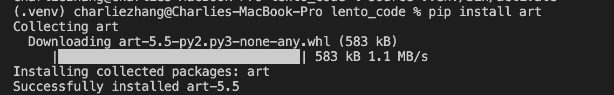

Packages and Modules
In code, packages are a collection of various files written by other people that have helpful functions you can use with in your projects. Each of these files are called modules. Packages and modules are made by other people and you add them to your code by typing their name. This is known as importing a module.
Let’s use our number guessing game from last week as an example. Looking at our code, we could improve it by adding a feature that makes correct_number completely random each time you play the game. We can do this with a module. Let’s use the module random. This is a module that generates random numbers. By typing import and then the module name, I am now able to access the various functions in the module and use them in my code:
import random
The random module has a function called randint() that we can use to generate a random integer for us. Now, the parameters that the randint() function accepts are a range to use for generating the random number: the first number represents the lower range and the second number represents the upper range. For example, if I put random.randint(1, 100), it will generate a number between 1 and 100.
import random
correct_number = random.randint(1, 100)
# As you can see, we're using the
# random.randint(lower_num, higher_num) structure above.
print(correct_number)
Now, if we play through the game again, you will see that the numbers generated are completely random.
A good way to find out what you can do with a module is searching up the name of the module online and finding information on StackOverflow or directly from the module's documentation. Here are some useful functions from the random module's documentation that you can play around with:
>>> random() # Generates random float (decimal number)
0.37444887175646646
>>> uniform(2.5, 10.0) # Generates random float between a lower_number and an upper_number
3.1800146073117523
>>> randrange(10) # Generates integer from 0 to 9 inclusive
7
>>> choice(['win', 'lose', 'draw']) # Returns a random element from a list
'draw'
So far, you've imported the random module into your code and started using it. But you might be asking, “where did this module come from?”. Well, the random module is from the Python Standard Library, also known as stdlib, which is a set of modules that come with Python and that can be used without installing anything else on your computer. If you want to use a third-party module not officially sponsored by Python, though, you have to install its package first manually.
Virtual Environments
Before we install a third-party package, though, we need to make a virtual environment, also known as a venv.
What is a venv?
In Python, virtual environments are spaces where various Python-related programs can be installed, without modifying your main Python installation. The programs are instead stored in a different folder, and you can tell Python to use this virtual environment folder instead of your system-wide environment using special commands.
Why are venvs important?
When you're working on Python projects, you may install various programs, such as a few third-party packages or separate, specific versions of Python. If you install these programs using your on Therefore, if you install all your programs in your terminal into your main, system-wide Python environment, programs may start to interfere with each other. It also becomes difficult to keep track of what programs are relevant to a specific project. Therefore, for each Python project you work on, you should create a virtual environment to install the necessary packages and programs in.
So, how do I make a venv?
- Make a folder with your guessing game file (
guessing_game.py). - Next, inside that folder, type:
python3 -m venv .venv
Great! You've just made a venv, stored in a folder named .venv.
- Activate your
venvby typing:
source .venv/bin/activate
Now, you're all set to install packages and programs for your project. If you wanted to turn off your venv, simply type:
deactivate
However, don't deactivate your venv just yet; you'll be installing a package to help spruce up your guessing game project.
Installing Packages
Now that you have a venv up and running, let’s install the third-party art package to display a few graphics in the terminal for our guessing game. In most languages, there is usually a package manager to help you install and manage packages for that language. Python's official package manager is known as pip. So, to install the art package with pip, type the following into your terminal:
python3 -m pip install art
Your terminal should look something like the below

Once that’s done, you can access specific modules in art by adding the following to the top of your Python file:
from art import art, tprint
Here, I’m referring to the art package (from art) and importing the art and tprint modules from it (import art, tprint). After we've done this, we can now access the tprint and art modules in the art package and use them in our code.
One function that is pretty useful is the tprint() function. Using tprint(), you can display text in your terminal and choose what font you want your text to be printed as. tprint() accepts two parameters: a string of text to print fancily, and a font name:
tprint("Welcome to my game!", font="bulbhead")
If you add this above the while loop in your guessing game code and then run the Python file again, you will see your message:
Another useful function is the art() function, which prints out an emoticon in your terminal. This function also accepts 2 parameters: an emoji name as a string, as well as a number for how many to display. For example, here is a single coffee emoji:
emoticons = art("coffee")
print(emoticons)

If I wanted to have 2 coffee emojis next to each other, I can also put in 2 as a second parameter in the art() function.
emoticons = art("coffee", 2)
print(emoticons)

üìñ You can read more about the
artmodule here.
And that's how you use packages, modules, and their functions in Python. Up next, a project!